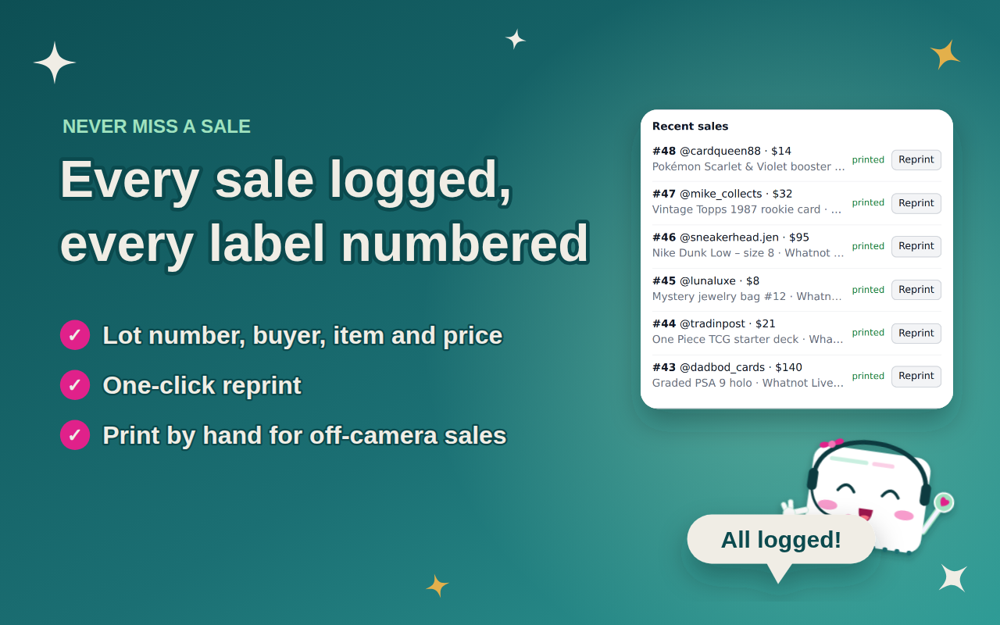
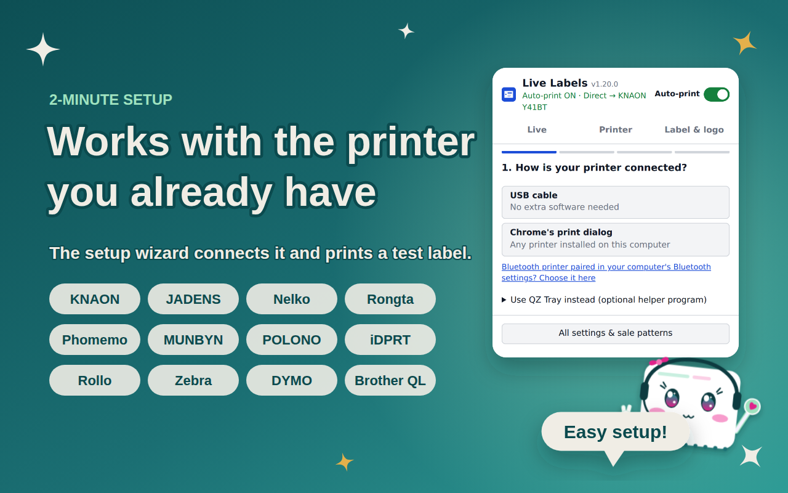

Auto-print sale labels for Whatnot, TikTok Shop, eBay Live and Poshmark shows
Live Labels is a Chrome extension for live sellers. The moment an item sells in your Whatnot, TikTok Shop, eBay Live or Poshmark show, it prints a label on your thermal printer with the lot number, the buyer's username, the item, the price, the buyer's box number and your shop logo. No typing, no sticky notes, no sorting out who bought what after the show.
Good to know: these are sorting labels for your show, not postage. Your shipping labels still come from Whatnot, TikTok Shop, eBay or Poshmark. You need Chrome on a computer with your show page open, and a label printer.
Add to Chrome – 14 days free Then $10/month or $99/year. No card needed to start.Rated 5.0 on the Chrome Web Store.

How to auto-print labels in a live show
- Add Live Labels to Chrome and run the setup wizard. It connects your label printer and prints a test label in about two minutes.
- Open your Whatnot, TikTok Shop, eBay Live or Poshmark show in Chrome. (For eBay Live or Poshmark, pick it in the side panel first.)
- Open the Live Labels side panel and turn on Auto-print.
- Sell. Every time an auction ends or an item sells, a label comes out of your printer. Stick it on the item and keep the show going.
15 seconds: an item sells, the label prints itself.
What prints on each label
Lot number
Counts up on its own, so every sale has a number you can match later.Buyer and box number
Each buyer gets their own box number. Buy three items, and all three labels say the same box, so their items go in one package.Item and price
Taken from the sale announcement on the show page, exactly as the buyer saw it.Your logo
Printed in crisp black and white for thermal printers, on every label.
Features
- Detects each sale on the live show page and prints right away
- Every sale listed in the side panel, with one-click reprint
- Print a label by hand for sales made off-camera
- Choose what's on the label: lot, buyer, item, price, date, header text
- Label sizes from 2" × 1" up to 4" × 6", in any orientation
- Optional: auto-print the shipping labels you download
- Show controls: start an auction, run a giveaway or send your shop link to the chat from a shortcut key, macro pad or Stream Deck (beta)
- Turns auto-print off when your show ends, if you like
- Labels printed today, this month and all time
- eBay Live auctions: pick eBay Live in the side panel, open your show's page on ebay.com, and each auction that ends prints a label. Buy It Now sales are not read yet.
- Poshmark Posh Show auctions: pick Poshmark in the side panel, open the show on poshmark.com, and each auction that ends prints a label with the winner, the item and the winning bid. Buy Now sales and giveaways are not read yet.
- Palmstreet (beta), and any other live-selling site you add in Settings
Works with the label printer you already have
USB and Bluetooth thermal label printers print directly from Chrome. Any printer installed on your computer works through Chrome's print dialog, and QZ Tray or PrintNode give silent printing to any printer. Built-in settings cover KNAON, JADENS, Nelko, Rongta, Phomemo, MUNBYN, POLONO, iDPRT, Rollo, Arkscan, Zebra, DYMO and Brother QL.

Pricing
| Plan | Price | What you get |
|---|---|---|
| Free trial | $0 for 14 days | Every feature, unlimited labels, no credit card |
| Monthly | $10 / month | Every feature, unlimited labels, cancel any time |
| Yearly | $99 / year | Same as monthly, two months free |
Test prints are always free. Payments are handled by Polar (polar.sh), our merchant of record. Founding members keep their price for as long as they stay subscribed.
Frequently asked questions
How do I automatically print labels during a Whatnot live show?
Install the Live Labels Chrome extension, connect your thermal label printer with its setup wizard, open your Whatnot show in Chrome, open the Live Labels side panel and turn on Auto-print. Each time an auction ends or an item sells, it prints a label with the lot number, buyer, item, price, box number and your logo.
Does Live Labels work with TikTok Shop live?
Yes. It detects sales on TikTok Shop live show pages in Chrome the same way it does on Whatnot, and you can add other live-selling sites in its settings.
Does Live Labels work with eBay Live?
Yes, for auctions. Pick eBay Live in the Live Labels side panel and allow it to read ebay.com, then open your own show's page on ebay.com in Chrome and keep that tab open while you sell. Each auction that ends prints a label with the winner, the item and the winning bid. Buy It Now sales on eBay Live are not read yet.
Does Live Labels work with Poshmark Posh Shows?
Yes, for auctions. Pick Poshmark in the Live Labels side panel and allow it to read poshmark.com, then open the show on poshmark.com in Chrome and keep that tab open while you sell. Each auction that ends prints a label with the winner, the item and the winning bid. Buy Now sales and giveaways on Poshmark are not read yet.
Which label printers work with Live Labels?
USB and Bluetooth thermal label printers print directly from Chrome, and any printer installed on your computer works through Chrome's print dialog. It has built-in settings for KNAON, JADENS, Nelko, Rongta, Phomemo, MUNBYN, POLONO, iDPRT, Rollo, Arkscan, Zebra, DYMO and Brother QL.
What is a box number?
Each buyer in a show gets their own box number, printed on every label for that buyer. When someone buys three items, all three labels say the same box, so you pack them together.
How much does Live Labels cost?
Free for 14 days with every feature and no credit card. Then $10 per month or $99 per year, with unlimited labels.
What data does Live Labels collect?
It reads the sale announcements on your live show page only to print your labels. Your sales history, logo and settings stay in your browser. No ads, no analytics, no tracking, and no data is sold.
Can I start auctions and giveaways from a hotkey or Stream Deck?
Yes. Live Labels' show controls (beta) press a button on your show page, such as Start auction or Giveaway, or send a message to the chat, from a keyboard shortcut. Macro pads and Stream Decks work by sending the same shortcut. They're included in the $10/month plan.
Is Live Labels the same as LiveLabel Pro or Hot-Label?
No. Live Labels (on the Chrome Web Store as "Live Labels: Auto-Print Sale Labels for Live Sellers") is made by Element 79/47, LLC. LiveLabel Pro and Hot-Label are separate extensions from other developers. See how they compare.
Is Live Labels affiliated with Whatnot or TikTok?
No. Live Labels is an independent tool and is not affiliated with, endorsed by or sponsored by Whatnot or TikTok.
Who makes Live Labels
Live Labels is built by Amir Rostami, a Whatnot and eBay seller, at Element 79/47, LLC in Acworth, Georgia. He built it for the same kind of shows he runs himself: every sale prints its own label, so packing after the stream goes fast. Questions and feature requests go straight to him at info@element7947.com.
"I especially like how it organizes buyer information, item details, and lot numbers, helping sellers save time and avoid confusion during busy live shows."
Chrome Web Store review, November 2026
Guides
- How to auto-print labels during a Whatnot live show
- Auto-print sale labels for TikTok Shop LIVE
- Print a label for every eBay Live auction
- Print labels for Poshmark Posh Show auctions
- How to pack a live show by box number
- Live Labels vs Hot-Label, NotBot, WhatLabels and BundleLive
- Printing live-sale labels: by hand, desktop app or Chrome extension
Follow for live-selling tips
Packing, printing and show tips every week on Instagram @livelabels.app and TikTok @livelabels.app.